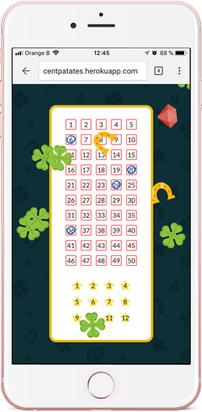

Javascript, DeviceMotion
Cette application ne peut malheureusement n'être testée que sur mobile.
Quand l’utilisateur secoue son téléphone portable, des chiffres sont aléatoirement générés pour remplir une grille Euromillions. Des animations sont aussi déclenchées pour afficher des illustrations de porte-bonheurs, qui se déplacent sur l’écran en fonction des mouvements de l’utilisateur (direction et vitesse).
